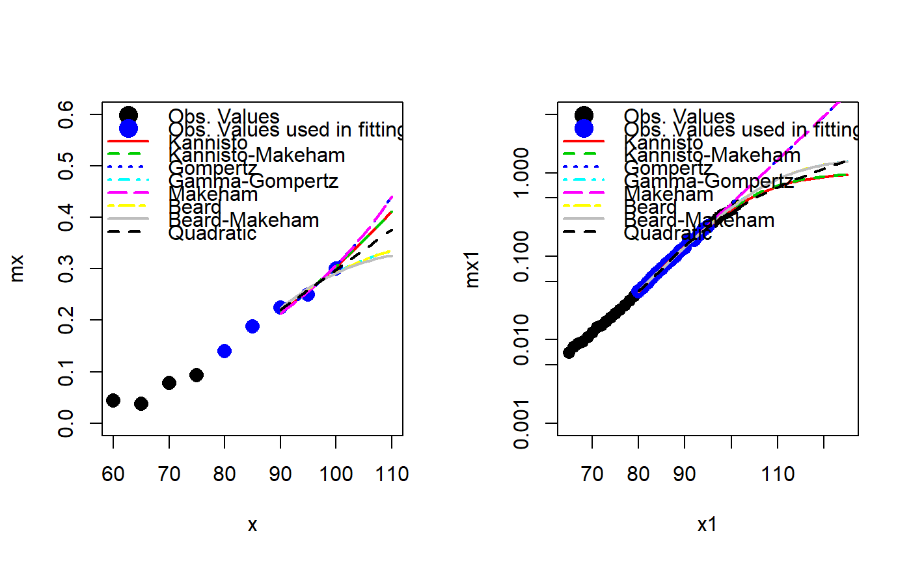

extra_mortality.RdExtrapolate old-age human mortality curve using mortality laws
extra_mortality(mx, x, x_fit = x, x_extr, law = c("kannisto", "kannisto_makeham", "gompertz", "ggompertz", "makeham", "beard", "beard_makeham", "quadratic"), opt.method = c("LF2", "LF1", "LF3", "LF4", "LF5", "LF6", "poissonL", "binomialL"), ...)
| mx | Vector or matrix of age specific death-rates. |
|---|---|
| x | Vector of ages at the beginning of the age interval. |
| x_fit | Ages to be considered in estimating the mortality model parameters.
|
| x_extr | Ages for which to extrapolate the death-rates. |
| law | The name of the mortality law/model to be used. The following options are available:
|
| opt.method | How would you like to find the parameters? Specify the
function to be optimize. Available options: the Poisson likelihood function
|
| ... | Other arguments to be passed on to the
|
An object of class extra_mortality with the following components:
List with arguments provided in input. Saved for convenience.
An unevaluated function call, that is, an unevaluated expressionwhich consists of the named function applied to the given arguments.
An object of class MortalityLaw. Here one can find fitted values, residuals, goodness of fit measures etc.
A vector or matrix containing the complete mortality data, that is the modified input data following the extrapolation procedure.
# Example 1 - abridged data # Age-specific death rates mx <- c(.0859, .0034, .0009, .0007, .0016, .0029, .0036, .0054, .0053, .0146, .0127, .0269, .0170, .0433, .0371, .0784, .0930, .1399, .1875, .2250, .2500, .3000) # Vector of ages x <- c(0, 1, seq(5, 100, by = 5)) names(mx) <- x # Fit the models / Extrapolate the mortality curve x_fit = c(80, 85, 90, 95, 100) x_extr = 90:110 f1 <- extra_mortality(mx, x, x_fit, x_extr, law = "kannisto") f2 <- extra_mortality(mx, x, x_fit, x_extr, law = "kannisto_makeham") f3 <- extra_mortality(mx, x, x_fit, x_extr, law = "gompertz") f4 <- extra_mortality(mx, x, x_fit, x_extr, law = "ggompertz") f5 <- extra_mortality(mx, x, x_fit, x_extr, law = "makeham") f6 <- extra_mortality(mx, x, x_fit, x_extr, law = "beard") f7 <- extra_mortality(mx, x, x_fit, x_extr, law = "beard_makeham") f8 <- extra_mortality(mx, x, x_fit, x_extr, law = "quadratic") # Plot the results par(mfrow = c(1, 2)) plot(x, mx, pch = 16, xlim = c(60, 110), ylim = c(0, 0.6), cex = 1.5) points(x_fit, mx[paste(x_fit)], pch = 16, col = 4, cex = 1.5) lines(x_extr, f1$values[paste(x_extr)], lty = 1, col = 2, lwd = 2) lines(x_extr, f2$values[paste(x_extr)], lty = 2, col = 3, lwd = 2) lines(x_extr, f3$values[paste(x_extr)], lty = 3, col = 4, lwd = 2) lines(x_extr, f4$values[paste(x_extr)], lty = 4, col = 5, lwd = 2) lines(x_extr, f5$values[paste(x_extr)], lty = 5, col = 6, lwd = 2) lines(x_extr, f6$values[paste(x_extr)], lty = 6, col = 7, lwd = 2) lines(x_extr, f7$values[paste(x_extr)], lty = 7, col = 8, lwd = 2) lines(x_extr, f8$values[paste(x_extr)], lty = 8, col = 9, lwd = 2) legend("topleft", bty = "n", legend = c("Obs. Values", "Obs. Values used in fitting", "Kannisto", "Kannisto-Makeham", "Gompertz", "Gamma-Gompertz", "Makeham", "Beard", "Beard-Makeham", "Quadratic"), lty = c(NA, NA, 1:8), pch = c(16, 16, rep(NA, 8)), col = c(1, 4, 2:9), lwd = 2, pt.cex = 2) # ---------------------------------------------- # Example 2 - 1-year age data # Age-specific death rates mx1 <- c(.0070, .0082, .0091, .0096, .0108, .0122, .0141, .0150, .0165, .0186, .0205, .0229, .0259, .0294, .0334, .0379, .0426, .0482, .0550, .0628, .0716, .0806, .0897, .1003, .1149, .1264, .1558, .1563, .1812, .2084, .2298, .2536, .2813, .3143, .3352, .3651, .4128) # Vector of ages x1 <- 65:101 names(mx1) <- x1 # Fit the models / Extrapolate the mortality curve x_fit = 80:95 x_extr = 80:125 g1 <- extra_mortality(mx1, x1, x_fit, x_extr, law = "kannisto") g2 <- extra_mortality(mx1, x1, x_fit, x_extr, law = "kannisto_makeham") g3 <- extra_mortality(mx1, x1, x_fit, x_extr, law = "gompertz") g4 <- extra_mortality(mx1, x1, x_fit, x_extr, law = "ggompertz") g5 <- extra_mortality(mx1, x1, x_fit, x_extr, law = "makeham") g6 <- extra_mortality(mx1, x1, x_fit, x_extr, law = "beard") g7 <- extra_mortality(mx1, x1, x_fit, x_extr, law = "beard_makeham") g8 <- extra_mortality(mx1, x1, x_fit, x_extr, law = "quadratic") # Plot plot(x1, mx1, log = "y", ylim = c(0.001, 5), pch = 16, xlim = c(65, 125), cex = 1.3)legend("topleft", bty = "n", legend = c("Obs. Values", "Obs. Values used in fitting", "Kannisto", "Kannisto-Makeham", "Gompertz", "Gamma-Gompertz", "Makeham", "Beard", "Beard-Makeham", "Quadratic"), lty = c(NA, NA, 1:8), pch = c(16, 16, rep(NA, 8)), col = c(1, 4, 2:9), lwd = 2, pt.cex = 2)# ---------------------------------------------- # Example 3 - Extrapolate mortality for multiple years at once # Create some data mx_matrix <- matrix(rep(mx1, 3), ncol = 3) %*% diag(c(1, 1.05, 1.1)) dimnames(mx_matrix) <- list(age = x1, year = c("year1", "year2", "year3")) F1 <- extra_mortality(mx_matrix, x = x1, x_fit, x_extr, law = "kannisto") F1#>#> #>#> #>#> #>ls(F1)#> [1] "call" "fitted.model" "input" "values"coef(F1)#> A B #> year1 0.03401502 0.1345911 #> year2 0.03570060 0.1353997 #> year3 0.03740144 0.1361282